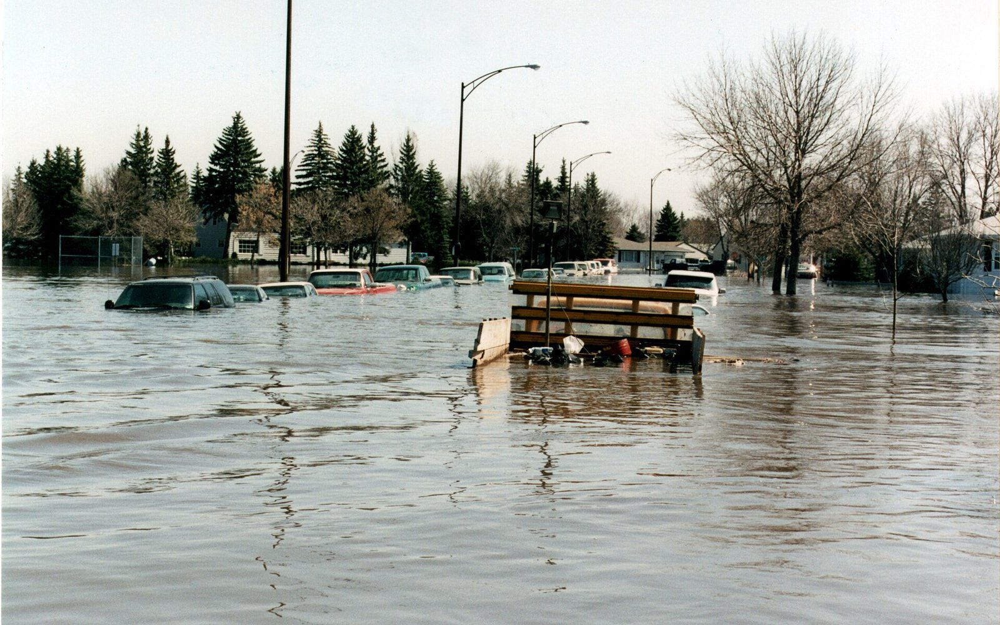

01 · Urban Flood Modeling
도시 홍수 모델링 — 1D–2D 연계 수리동역학
도시 침수는 하천 범람(외수)과 우수관거 월류(내수)가 동시에 일어나는 복합 현상입니다. 1차원 관망 모형(SWMM)과 2차원 지표면 흐름 모형(자체 개발 유한체적모형, HEC-RAS 2D, InfoWorks ICM Rain-on-Mesh)을 양방향으로 연계하여 도시 침수를 재현하고, 격자 유형·해상도·매개변수가 결과에 미치는 영향을 정량화합니다.
지하철·지하상가와 같은 지하공간, 건물 배치를 고려한 porous shallow-water 접근으로 계산 효율과 정확도를 함께 확보하며, 실측 침수흔적과 위성·항공 영상으로 모형을 검증합니다.
Methods & Tools
SWMMHEC-RAS 1D/2DInfoWorks ICM (Rain-on-Mesh)
In-house Godunov FVMMixed / hybrid meshPorous SWEParameter optimization
Representative publications
- Parameter Optimization of Coupled 1D–2D Hydrodynamic Model for Urban Flood Inundation — Water, 2023
- A Simple and Robust Method for Simultaneous Consideration of Overland and Underground Space in Urban Flood Modeling — Water, 2016
- Urban flood modeling with porous shallow-water equations: A case study of model errors in the presence of anisotropic porosity — Journal of Hydrology, 2015
- Mesh type tradeoffs in 2D hydrodynamic modeling of flooding with a Godunov-based flow solver — Advances in Water Resources, 2014
